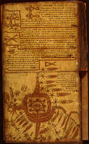

Pustaha ni Porbuhitan. Bataks. Handschrift op boombast, in harmonikavorm gevouwen, met houten platten, 27 ff., afmetingen per blad circa 255 x 280 mm. Sumatra, vóór 1850. -- (Or. 3429)
Het buffeloffer was de belangrijkste plechtigheid in de oude Batakse religie. De wijding van het rijstjaar, het ‘mangase taon’, eiste ieder jaar opnieuw het oprichten van een slachtpaal op de traditionele offerplaats van een stammengroep, die buiten de dorpen gelegen was. Aan die paal werd een karbouw gebonden, die met een lans werd doodgestoken. De wijze waarop de buffel loopt en de richting waarin hij valt als hij gespietst wordt zijn van belang voor de divinatie. Deze ceremonie is wel vanwege de begeleidende teksten geïnterpreteerd als een uitbeelding van het scheppingsverhaal. Ook bij andere gelegenheden wordt een buffeloffer gebracht, bij voorbeeld bij gelegenheid van het ‘santi-rea’ feest, waarbij gepelde rijst aan de voorvader van een clan of familie wordt geofferd. Ook dan wordt een slachtpaal opgericht, zij het op het dorpsplein, waar zich het stamhuis van de groep bevindt.
Soms wordt ook een buffeloffer voorgeschreven bij het uitzoeken van een plaats om een dorp te stichten, bij de inwijding van een nieuw dorp, bij geboorte, huwelijk of dood van voorname personen, bij het begin van een veldtocht en dergelijke. De ‘datu’, de Batakse magiër, let daarbij steeds nauwkeurig op de voortekenen. Daarvoor raadpleegt hij zijn boek over buffelwichelarij, zijn Pustaha ni Porbuhitan.
Het hakken van de slachtpaal vereist het uitspreken van bepaalde formules. Uit de teksten die deze handeling moeten begeleiden en die in de wichelboeken worden vermeld, blijkt dat dit hakken een kosmische implicatie heeft. De boom waaruit de slachtpaal zal worden gemaakt, wordt beschreven als de wereldboom. Deze wereldboom wortelt in de onderwereld op de schildpad en reikt tot de hemel. De boom wordt losgemaakt uit de wildernis en overgebracht naar de offerplaats, waar hij weer in zijn oorspronkelijke staat wordt hersteld. Hij wordt daartoe gebonden met een draad van zwarte zijde, die ook bij de schepping, volgens sommige verhalen, de verbinding tussen boven- en onderwereld tot stand brengt.
De illustratie in het handschrift op folio 24v toont een instructie voor het vervaardigen van de tekening van meel of van kalk, die rond de slachtpaal wordt aangebracht. De illustratie is rood, omdat rood en zwart nu eenmaal de enige kleuren zijn die bij het maken van Batakse handschriften worden gebruikt. Volgens dit handschrift wordt de tekening op de grond gemaakt in de kleuren wit, geel en zwart. De paal zelf staat op de rug van de chtonische schildpad, in het midden van de tekening. De schildpad wordt omsloten door twee vierkanten, de een diagonaal in de ander geplaatst. De figuren rondom het centrum geven aanknopingspunten voor de divinatie aan, bij voorbeeld als de stervende buffel daar ten val komt. Rechts onder drie afgehakte armen, die als voorteken van overwinning in de strijd kunnen gelden. De afgehakte hoofden, en het schild rechts van het midden, duiden mogelijk op hetzelfde. De twee puntige uitsteeksels, de een naar boven, de ander naar beneden, geven waarschijnlijk windrichtingen aan.
De tekst boven de tekening luidt in vertaling: ‘Men make een tekening op het dorpsplein in de vorm van "bindu matoga". Men make die daar driesoortig [namelijk in de kleuren geel, wit en zwart]. Wij moeten niet door de muil van onze Heer Pane na bolon verzwolgen worden, niet door zijn staart neergemaaid worden; hij moet zich in een gunstige positie ten opzichte van ons bevinden, dan zullen wij winst behalen in de strijd. Zo zij het in de toekomst. Dit is de figuur midden op het dorpsplein. Wij moeten niet vergeten in welke richting hij zich [ten opzichte van ons] bevindt, o leerling die zich [in de wichelkunst] bekwaamt. Zo zij het, gastheer [die dit ceremoniële feest geeft].’ Links onder de tekening luidt de tekst in vertaling: ‘Wat betreft de tekening op het dorpsplein: men tekene een "bindu matoga" rondom de slachtpaal waaraan de buffel gebonden wordt. Dit alles make men op het dorpsplein, o "datu" [magiër]. Ja, zo zij het.’
Schuster heeft analoge afbeeldingen van de chtonische schildpad, op wiens rug de as van de wereld staat, gevonden in Batak handschriften, Zuidindiase inscripties, bas-reliëfs uit Cambodja, tekeningen in een pre-Columbiaanse Mexicaanse codex en Hindoe-Javaanse en Chinese inscripties. De veelheid aan parallellen duidt op een wijde verbreiding van de idee van de chtonische schildpad. Dit handschrift behoort tot de collectie die H.N. van der Tuuk in zijn Sumatraanse periode (1851-1857) bijeen heeft gebracht.
Literatuur
- P. Voorhoeve, ‘Batakse buffelwichelarij’, in: Bijdragen tot de taal-, land- en volkenkunde, 114 (1958), p. 238-248.
- Carl Schuster, ‘Comparative observations on some typical designs in Batak
manuscripts’, in: P. Voorhoeve, Catalogue of Indonesian manuscripts [in the] Royal
Library, Copenhagen. Pt. 1: Batak manuscripts. With a contribution by Carl
Schuster. Copenhagen 1975, p. 52-85.

vorige pagina top pagina